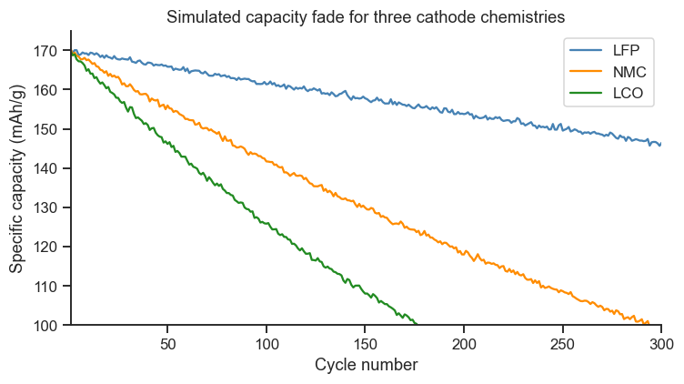
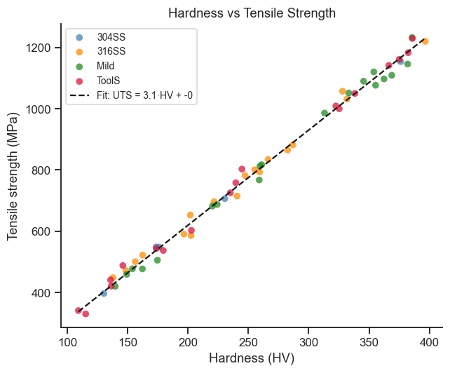
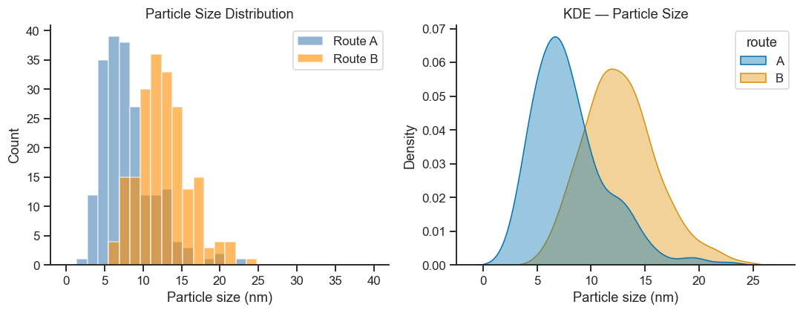
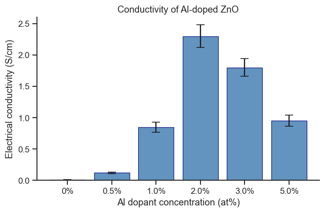
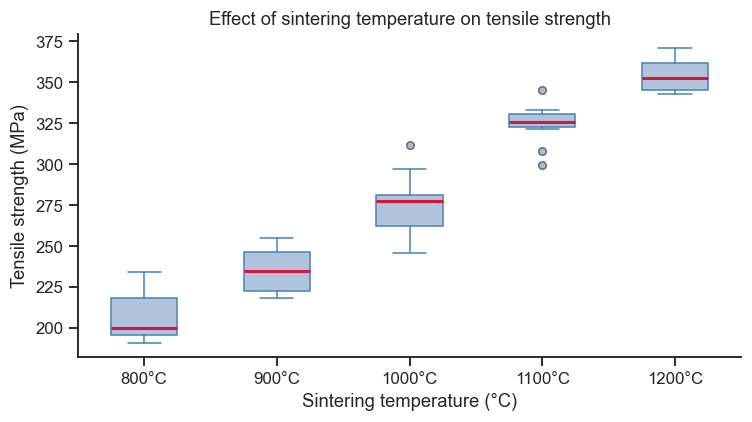
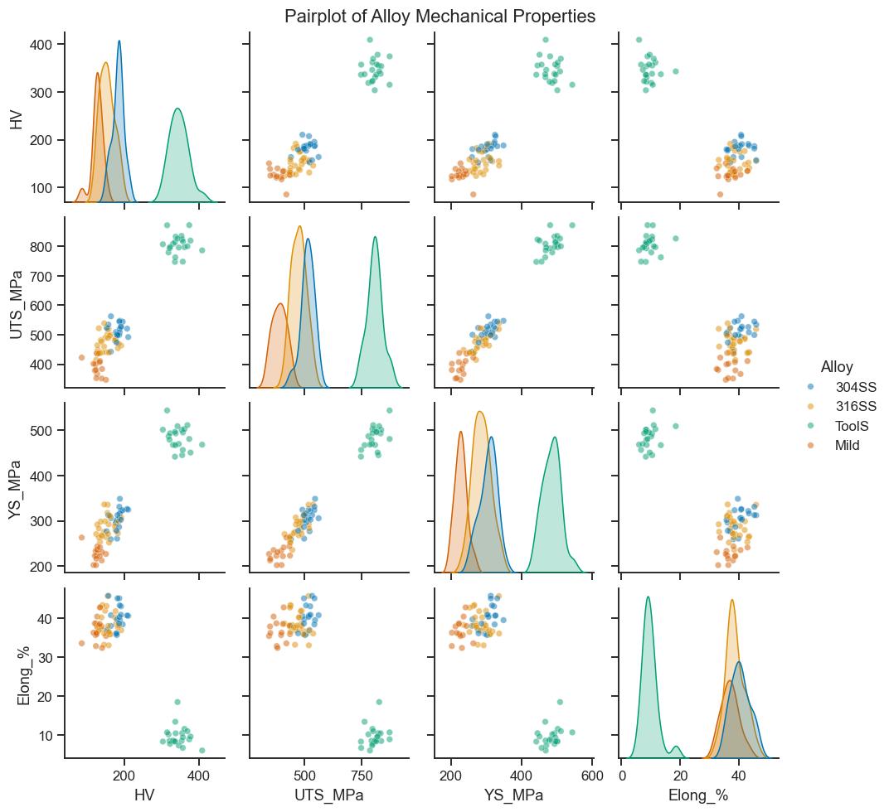
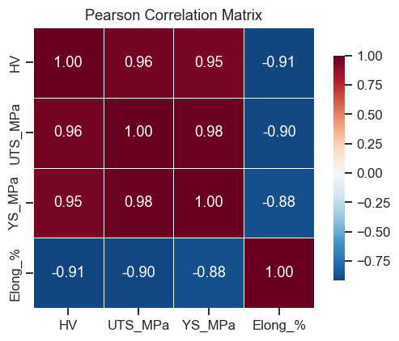
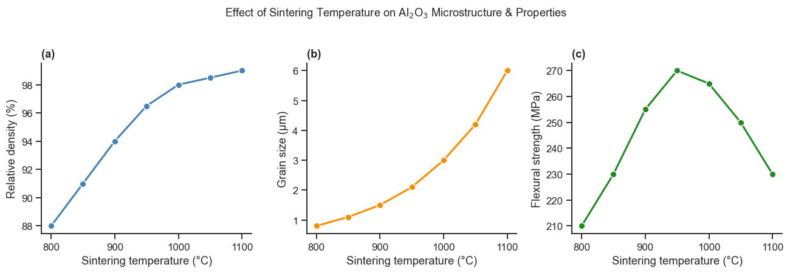

4. Data Visualization with Matplotlib & Seaborn#
Good figures are as important as good analysis. This notebook covers the most useful plot types for materials-science data: scatter, line, bar, histogram, boxplot, heatmap, and pairplot.
Topics
Matplotlib fundamentals — Figure, Axes, artist model
Scatter and line plots
Histograms and density plots
Bar charts and error bars
Box plots
Seaborn — pairplot and heatmap
Customisation and publication style
import numpy as np
import pandas as pd
import matplotlib.pyplot as plt
import seaborn as sns
# Consistent style throughout the book
plt.rcParams.update({'figure.dpi': 110, 'font.size': 11})
sns.set_theme(style='ticks', palette='colorblind')
rng = np.random.default_rng(42)
print('matplotlib:', plt.matplotlib.__version__)
print('seaborn: ', sns.__version__)
matplotlib: 3.10.8
seaborn: 0.13.2
4.1 Matplotlib Fundamentals#
Every Matplotlib figure has two parts worth naming explicitly: the Figure
(the whole canvas/window — what you’d save as a PNG) and one or more
Axes (an individual plot inside that canvas — the thing with x/y labels
and data on it). The object-oriented API is preferred: fig, ax = plt.subplots() hands you both as variables, so every later customisation
(ax.set_xlabel(...), ax.legend()) is explicit about which plot it
applies to. This matters as soon as you want more than one panel side by
side (Section 4.7) — without explicit handles it becomes ambiguous which
axes a command is modifying.
# ── Battery capacity fade — basic line plot ───────────────────────────────────
cycles = np.arange(1, 301)
cap_fade = lambda c, k: 170 * np.exp(-k * c) + rng.normal(0, 0.4, len(c))
cap_LFP = cap_fade(cycles, 0.0005)
cap_NMC = cap_fade(cycles, 0.0018)
cap_LCO = cap_fade(cycles, 0.0030)
fig, ax = plt.subplots(figsize=(7, 4))
ax.plot(cycles, cap_LFP, label='LFP', color='steelblue', lw=1.5)
ax.plot(cycles, cap_NMC, label='NMC', color='darkorange', lw=1.5)
ax.plot(cycles, cap_LCO, label='LCO', color='forestgreen', lw=1.5)
ax.set_xlabel('Cycle number')
ax.set_ylabel('Specific capacity (mAh/g)')
ax.set_title('Simulated capacity fade for three cathode chemistries')
ax.legend()
ax.set_xlim(1, 300)
ax.set_ylim(100, 175)
sns.despine(ax=ax)
plt.tight_layout()
plt.show()

4.2 Scatter Plots — Structure–Property Relationships#
# Synthetic alloy data: tensile strength vs hardness
n = 60
hardness = rng.uniform(100, 400, n)
tensile = 3.1 * hardness + rng.normal(0, 25, n) # approximate Vickers → MPa
alloy_type = rng.choice(['304SS', '316SS', 'Mild', 'ToolS'], n)
df_alloy = pd.DataFrame({'HV': hardness, 'UTS_MPa': tensile, 'alloy': alloy_type})
fig, ax = plt.subplots(figsize=(6, 5))
colors = {'304SS': 'steelblue', '316SS': 'darkorange', 'Mild': 'forestgreen', 'ToolS': 'crimson'}
for alloy, grp in df_alloy.groupby('alloy'):
ax.scatter(grp['HV'], grp['UTS_MPa'], c=colors[alloy],
label=alloy, s=40, alpha=0.75, edgecolors='none')
# Regression line
x_fit = np.linspace(hardness.min(), hardness.max(), 100)
m, b = np.polyfit(hardness, tensile, 1)
ax.plot(x_fit, m * x_fit + b, 'k--', lw=1.5, label=f'Fit: UTS = {m:.1f}·HV + {b:.0f}')
ax.set_xlabel('Hardness (HV)')
ax.set_ylabel('Tensile strength (MPa)')
ax.set_title('Hardness vs Tensile Strength')
ax.legend(fontsize=9, frameon=True)
sns.despine(ax=ax)
plt.tight_layout()
plt.show()

4.3 Histograms and Density Plots#
A histogram answers “how many samples fall into this size range?” by grouping continuous measurements into bins and counting. It is the standard way to visualise a distribution shape — is it symmetric, skewed, does it have two peaks (suggesting two populations mixed together)? A KDE (kernel density estimate) plots a smoothed version of the same idea — a continuous curve instead of blocky bars — which makes it easier to compare two overlapping distributions (like the two synthesis routes below) at a glance. Part III builds directly on this: histograms and KDEs are your first visual check of whether data looks roughly “bell-shaped” (normally distributed) before applying a statistical test that assumes it.
# Particle size distributions from two synthesis routes
route_A = rng.lognormal(mean=2.0, sigma=0.4, size=200) # nm
route_B = rng.lognormal(mean=2.5, sigma=0.25, size=200)
fig, axes = plt.subplots(1, 2, figsize=(10, 4))
# Histogram
bins = np.linspace(0, 40, 30)
axes[0].hist(route_A, bins=bins, alpha=0.6, color='steelblue', label='Route A')
axes[0].hist(route_B, bins=bins, alpha=0.6, color='darkorange', label='Route B')
axes[0].set_xlabel('Particle size (nm)')
axes[0].set_ylabel('Count')
axes[0].set_title('Particle Size Distribution')
axes[0].legend()
# KDE (seaborn)
df_ps = pd.DataFrame({'size_nm': np.concatenate([route_A, route_B]),
'route': ['A']*200 + ['B']*200})
sns.kdeplot(data=df_ps, x='size_nm', hue='route', fill=True, alpha=0.4, ax=axes[1])
axes[1].set_xlabel('Particle size (nm)')
axes[1].set_title('KDE — Particle Size')
for ax in axes:
sns.despine(ax=ax)
plt.tight_layout()
plt.show()
print(f'Route A: median = {np.median(route_A):.1f} nm, std = {route_A.std():.1f} nm')
print(f'Route B: median = {np.median(route_B):.1f} nm, std = {route_B.std():.1f} nm')

Route A: median = 7.3 nm, std = 3.4 nm
Route B: median = 12.4 nm, std = 3.3 nm
4.4 Bar Charts with Error Bars#
# Conductivity of doped ZnO at different dopant concentrations
dopant_pct = [0, 0.5, 1.0, 2.0, 3.0, 5.0] # at%
cond_mean = [0.01, 0.12, 0.85, 2.3, 1.8, 0.95] # S/cm
cond_sem = [0.001, 0.015, 0.08, 0.18, 0.14, 0.09] # standard error
fig, ax = plt.subplots(figsize=(6, 4))
x = np.arange(len(dopant_pct))
bars = ax.bar(x, cond_mean, yerr=cond_sem, capsize=5,
color='steelblue', edgecolor='navy', linewidth=0.8, alpha=0.85)
ax.set_xticks(x)
ax.set_xticklabels([f'{d}%' for d in dopant_pct])
ax.set_xlabel('Al dopant concentration (at%)')
ax.set_ylabel('Electrical conductivity (S/cm)')
ax.set_title('Conductivity of Al-doped ZnO')
sns.despine(ax=ax)
plt.tight_layout()
plt.show()

4.5 Box Plots#
A box plot summarises an entire distribution in five numbers at a glance: the median (the line inside the box), the middle 50% of the data (the box itself, from the 25th to 75th percentile), and the overall spread (the whiskers), with unusually extreme points (“outliers”) marked individually. It is the fastest way to compare several groups side by side — here, tensile strength at five different sintering temperatures — without needing to overlay five separate histograms.
# Tensile strength measured at 5 sintering temperatures (10 samples each)
temperatures = [800, 900, 1000, 1100, 1200] # °C
uts_data = {
T: rng.normal(loc=200 + (T - 800) * 0.4, scale=15, size=10)
for T in temperatures
}
fig, ax = plt.subplots(figsize=(7, 4))
ax.boxplot([uts_data[T] for T in temperatures],
tick_labels=[f'{T}°C' for T in temperatures],
patch_artist=True,
boxprops=dict(facecolor='lightsteelblue', color='steelblue'),
medianprops=dict(color='crimson', linewidth=2),
whiskerprops=dict(color='steelblue'),
capprops=dict(color='steelblue'),
flierprops=dict(marker='o', markerfacecolor='steelblue', markersize=5, alpha=0.5))
ax.set_xlabel('Sintering temperature (°C)')
ax.set_ylabel('Tensile strength (MPa)')
ax.set_title('Effect of sintering temperature on tensile strength')
sns.despine(ax=ax)
plt.tight_layout()
plt.show()

4.6 Seaborn — Pairplot and Heatmap#
# Build a richer alloy dataset for pairplot
n = 80
alloys = rng.choice(['304SS', '316SS', 'Mild', 'ToolS'], n)
base_HV = {'304SS': 180, '316SS': 160, 'Mild': 130, 'ToolS': 350}
base_UTS = {'304SS': 515, '316SS': 485, 'Mild': 400, 'ToolS': 800}
base_elong= {'304SS': 40, '316SS': 40, 'Mild': 36, 'ToolS': 10}
HV = np.array([base_HV[a] + rng.normal(0, 20) for a in alloys])
UTS = np.array([base_UTS[a] + rng.normal(0, 30) for a in alloys])
elong= np.array([base_elong[a] + rng.normal(0, 3) for a in alloys])
ys = UTS * 0.6 + rng.normal(0, 20, n) # approximate yield strength
df_pp = pd.DataFrame({'HV': HV, 'UTS_MPa': UTS, 'YS_MPa': ys,
'Elong_%': elong, 'Alloy': alloys})
g = sns.pairplot(df_pp, hue='Alloy', diag_kind='kde',
vars=['HV', 'UTS_MPa', 'YS_MPa', 'Elong_%'],
plot_kws={'alpha': 0.5, 's': 25},
height=2.2)
g.figure.suptitle('Pairplot of Alloy Mechanical Properties', y=1.01)
plt.show()

# Correlation heatmap
corr = df_pp[['HV', 'UTS_MPa', 'YS_MPa', 'Elong_%']].corr()
fig, ax = plt.subplots(figsize=(5, 4))
sns.heatmap(corr, annot=True, fmt='.2f', cmap='RdBu_r', center=0,
square=True, linewidths=0.5, ax=ax,
cbar_kws={'shrink': 0.8})
ax.set_title('Pearson Correlation Matrix')
plt.tight_layout()
plt.show()

4.7 Multi-panel Figure and Publication Style#
# Synthesis–property summary figure for a paper
T_sinter = np.array([800, 850, 900, 950, 1000, 1050, 1100])
density_pct = np.array([88, 91, 94, 96.5, 98, 98.5, 99])
grain_um = np.array([0.8, 1.1, 1.5, 2.1, 3.0, 4.2, 6.0])
strength = np.array([210, 230, 255, 270, 265, 250, 230])
fig, axes = plt.subplots(1, 3, figsize=(12, 4))
for ax, y, ylabel, color in zip(
axes,
[density_pct, grain_um, strength],
['Relative density (%)', 'Grain size (µm)', 'Flexural strength (MPa)'],
['steelblue', 'darkorange', 'forestgreen']
):
ax.plot(T_sinter, y, 'o-', color=color, lw=2, ms=7, mec='white', mew=1)
ax.set_xlabel('Sintering temperature (°C)')
ax.set_ylabel(ylabel)
sns.despine(ax=ax)
for ax, label in zip(axes, ['(a)', '(b)', '(c)']):
ax.set_title(label, loc='left', fontweight='bold')
plt.suptitle('Effect of Sintering Temperature on Al$_2$O$_3$ Microstructure & Properties',
fontsize=12, y=1.02)
plt.tight_layout()
# Save for a report
# fig.savefig('sintering_study.pdf', bbox_inches='tight')
plt.show()

Exercises#
XRD pattern: Use
matplotlibto plot a simulated XRD pattern. Represent each peak as a vertical line (ax.vlines) at 2θ positions calculated for FCC gold (a = 4.078 Å, use peaks (111), (200), (220), (311), (222)). Add a Gaussian broadening usingscipy.stats.norm.pdfto give each peak a FWHM of ~0.3°.Seaborn violin plot: Use
sns.violinplotto compare theroute_Aandroute_Bparticle-size data from section 4.3 in a single figure.Save figure: Modify the multi-panel figure in section 4.7 to save as both PNG (300 dpi) and PDF. Use
tight_layout()before saving.